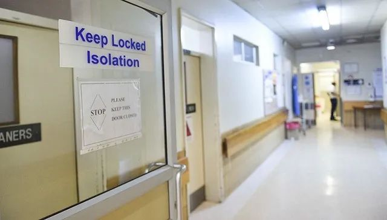

数说疫情0306：湖北非武汉地区首次零新增，美国感染数可能被低估
原文链接 备份链接 境外累计确诊病例即将超过2万。美国很可能有上千例潜在感染病例以及他们的密切接触者未能被及时发现和隔离，到目前为止，“我们看到的美国官方病例数字可能只是冰山一角”。 文 |《财经》数据研究员徐进 图 |《财经》 …

图片来源：Twitter
记者：安晶
“
“外面的天气好得要命，感觉这个疫情像是假的。”
”
“我的学生私下告诉我，他做了病毒检测，正在等结果。我现在还没有症状，正在家隔离，看会不会收到去检测的通知。”
哈佛大学的博士研究生何小伟告诉界面新闻，他已经在家隔离了六天。哈佛大学目前有两名学生确诊感染新型冠状病毒肺炎。现在学校正在放春假。
何小伟的儿子尚未满周岁，他母亲正在美国帮忙带小孩。按照之前的设想，何小伟原打算在春假期间带母亲去纽约旅游放松一下。
武汉封城后，何小伟上的一门课曾用武汉做案例，讨论“紧急状态”问题。他从未想过，原本只是学术讨论中的案例，会离自己的生活如此之近。
何小伟第一次听到新型冠状病毒是在春节前。
当时美国有中文媒体将其称为“新型非典”，也有文章说是吃蝙蝠引发的，何小伟只是觉得“不可思议”。
那时候，美国国内的焦点全部放在了对总统特朗普的弹劾审判。美国参议院于1月16日开始特朗普的弹劾审判，一直持续到2月5日。
“没有几个人关心中国的疫情。”
何小伟在美国生活了多年，据他的观察，美国主流媒体没有走世界主义路线、主要关注美国国内的事情，只有从其他国家的媒体上能看到关于疫情的报道。
虽然知道了武汉的疫情，但何小伟并没有任何紧张感，同学和同事之间也鲜少有人讨论。
这段时期，何小伟印象最深的是一名同学在武汉封城之前回到美国。大家都对她表示了关心，哈佛的各个中国学生组织开始组织捐款。
收到捐款后，学生组织在当地扫货，购买了大批口罩、防护服和护目镜。看到印有学校名字的捐赠箱抵达武汉的照片时，何小伟还感觉很欣慰。
真正让他开始有紧张感是除湖北之外，疫情开始扩散，浙江的确诊病例增多。何小伟在浙江有亲戚，听说杭州也要封城，“我就感觉事情严重了”。再之后，何小伟姐姐所在的小区出现确诊，小区被封。
“媳妇比较着急，让我去药店买口罩做些准备。”何小伟去了很多家药店，只看到了口罩在补货中的提示；在亚马逊网站上，大部分口罩也显示要3月中旬才有货。
何小伟的妻子天天去药妆店碰运气，一直没有收获，再加上美国当时本土确诊病例很少，两人便放弃了继续寻找口罩。
1月21日，美国的首例本土确诊病例出现西海岸的华盛顿州。之后，新增确诊病例主要分布在华盛顿州、加州等西海岸地区。
哈佛大学位于东海岸马萨诸塞州。虽然马萨诸塞州的首例确诊出现在2月1日，但该州此前大部分确诊都与一家生物科技公司在波士顿举行的员工会议有关。
美国从“钻石公主”号撤侨也没有引起何小伟身边美国同事和朋友的不安，“撤回来的人都被安排在军事基地，离我们很远，好吃好喝，还有心理医生，大家觉得这样的安排很妥帖”。
这一时期，学校发邮件宣布，申请去中国的研究项目将被推迟。何小伟本来计划在暑假做一个研究项目，收到学校通知后，“感觉项目没戏了”。
此时，对于何小伟个人而言，除了牵挂国内的家人，疫情对他日常生活造成的唯一影响是研究项目做不成了。
而据他回忆，当地人对疫情关注的转折点出现在意大利确诊病例激增之后。
“因为大家都喜欢去意大利玩，马上又是春假，很多人都在计划去意大利。但学校和各种机构突然叫停了意大利行程。”
这时候已经有人开始关心从意大利返回美国的乘客有没有进行自我隔离。与此同时，华盛顿州金县的养老院社群感染在2月29日出现了首例死亡。
报告首例死亡之后，何小伟收到了学校的邮件，称校方正在密切关注疫情发展，呼吁大家勤洗手。系门口也出现免洗消毒液，进出的人都开始在手上涂消毒液。
何小伟随后去了当地的一家大型超市，买了肥皂、两袋米、10包面粉和两根羊腿。
他当时考虑大超市人多经常排队，今后要减少去人群密集地的次数，但超市里买东西的当地人却“一如既往的淡定”。
回家后，何小伟再次开始在亚马逊上找口罩，但价格已经集体翻倍。平时仅需80美分一个的一次性口罩变成了3美元，要等几周才有货，而且还额外增加了20美元左右的运费。
他再次放弃了在美国国内买口罩的想法。
“一方面我觉得当地人口密度小，没有口罩其实是可以的；再一个是最近几个医院发出求助，说医用物资短缺，让大家不要占用口罩，我觉得是有道理的。”
也许因为平时出门没有戴口罩，何小伟没有遭到过当地人的歧视和辱骂。但他也从报道里看到了戴口罩的华人被歧视的新闻。
虽然他本人不认为口罩是必需品，但考虑到一家老小，何小伟还是托了国内的家人寄口罩到美国。
对于美国政府被指应对疫情迟缓，在何小伟看来，美国一直是弱政府、民众彪悍，大家并没有指望政府能怎么样，“因此现在买枪的人都变多了”。
据《福布斯》杂志报道，今年2月，美国联邦调查局系统中记录的购枪者背景调查达到280万份，比去年同期上涨36%，也是自2016年以来的最大涨幅。
在华盛顿州、加州和纽约州等重灾区，还出现了排队买枪的盛况，部分枪支店的销量在近两周上涨了六倍。从2月23日到3月4日，弹药销售网站Ammo.com中的付款转账比前11天上涨了68%。
2月23日正是意大利宣布对北部受疫情影响严重的11个城镇实施封锁隔离之时。
随着疫情在美国扩散，截至3月17日，马萨诸塞州的确诊病例已经升至218例。
哈佛大学10日发布公告，要求所有学生在春假结束后不要返校，春假后的本科和研究生课程将改为远程或网络授课。原计划的开学时间为3月23日。
同一天，哈佛大学还要求住校学生在15日之前搬离学校，学校将为寄送保存行李提供补贴。
虽然学校开始采取行动，但何小伟不久前才与同事聚餐，“大家都是点了餐一起分享”。最近，他发现了一些变化：公寓楼下堆满了网购的快递包，“目测尿不湿和厕纸最多”。
随着越来越多中国人选择回国躲避疫情，何小伟收到了朋友分享的机票信息，从波士顿回国的机票已经涨到3万元人民币左右。
但何小伟没有考虑过回国。
在他看来，去人满为患、没有防疫检测的机场，感染病毒的可能性更大，“机场走一圈，得病百分百”。
上周，何小伟收到了学校的邮件，宣布学生中有两人确诊。为了保护个人隐私，学校没有公开确诊学生的详细信息。密切接触者会单独收到通知，进行隔离检测。
而何小伟的一名学生私下发信息，告诉他自己接受了病毒检测，正在等检测结果。在此之前，何小伟与包括这名学生在内的15人在同一教室上课。
收到信息后，何小伟开始了自我隔离，“只能等着看会不会被通知去检测”。
按照流程，如果怀疑自己感染新冠病毒，何小伟需先电话联系家庭医生，由家庭医生判断是否需要接受进一步检测。如果可疑程度高，校医院会派救护车将何小伟送往隔离点检测。
由于目前没有任何症状，何小伟选择了留在家中。他在家中主要是批改学生作业、开视频会、看电影、刷视频。
“外面的天气好得要命，感觉这个疫情像是假的。”
但视频中频繁出现的股市熔断、疫情走向预期的新闻不断提醒着何小伟：病毒是真的，他正在因此隔离。
“还好家里囤了粮，”何小伟说，“现在最担心的就是收到通知让我去检测。”
何小伟的母亲目前心情不太好，非常担忧他的身体状况；何小伟最大的担忧则是，如果自己被感染了传染给家人，“生活就底朝天了”。
等到疫情结束的那一天，何小伟最想做的是：“把我妈送回家。”
（为保护个人隐私，应被采访者要求，何小伟为化名。）
未经授权 禁止转载

原文链接 备份链接 境外累计确诊病例即将超过2万。美国很可能有上千例潜在感染病例以及他们的密切接触者未能被及时发现和隔离，到目前为止，“我们看到的美国官方病例数字可能只是冰山一角”。 文 |《财经》数据研究员徐进 图 |《财经》 …
原文链接 备份链接 “Dio ha scelto di stare dalla nostra parte.” ********************** 在2月21日之前，意大利新冠肺炎确诊病例仅有3例。然而截至当地时间3月10日，意大 …
原文链接 备份链接 现在校园里还没有人戴口罩，但国内的亲人总是打电话说美国疫情严重，出门一定要戴口罩，这让他非常为难。 文｜李 莹 今年春节，我到美国旅游，结果因为新冠肺炎疫情，回程航班被取消了……一言难尽。这是我滞留美国的第42天，西 …
原文链接 备份链接 从股市的表现来看，市场更倾向于认同用短期的不便和经济痛苦来换取对病毒的控制 文 |《财经》特派记者 金焱 发自华盛顿 编辑 | 苏琦 新冠肺炎疫情持续肆虐，美国和欧洲为应对疫情影响经济，纷纷出台各种刺激救助政策，试图 …
原文链接 备份链接 一个理想的政策，不能走极端 要在不同的目标之间实现平衡 3月13日，来自美国马萨诸萨州的黎女士携丈夫和儿子，乘国航988航班，在北京落地。3月16日她被确诊为新冠肺炎。17日，其丈夫洪某某也被确诊。 黎某户籍在重庆，常 …